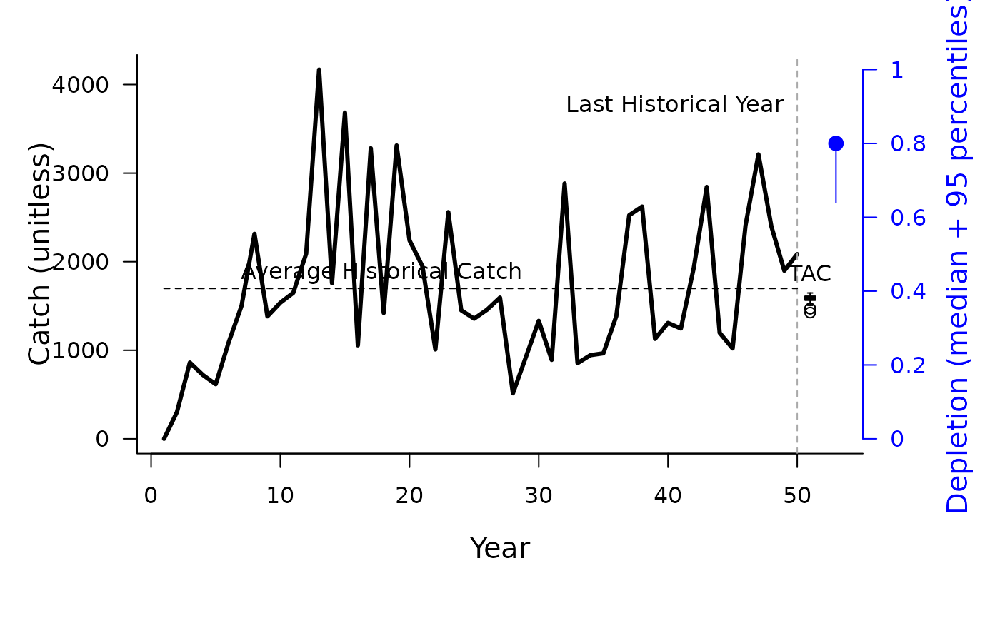
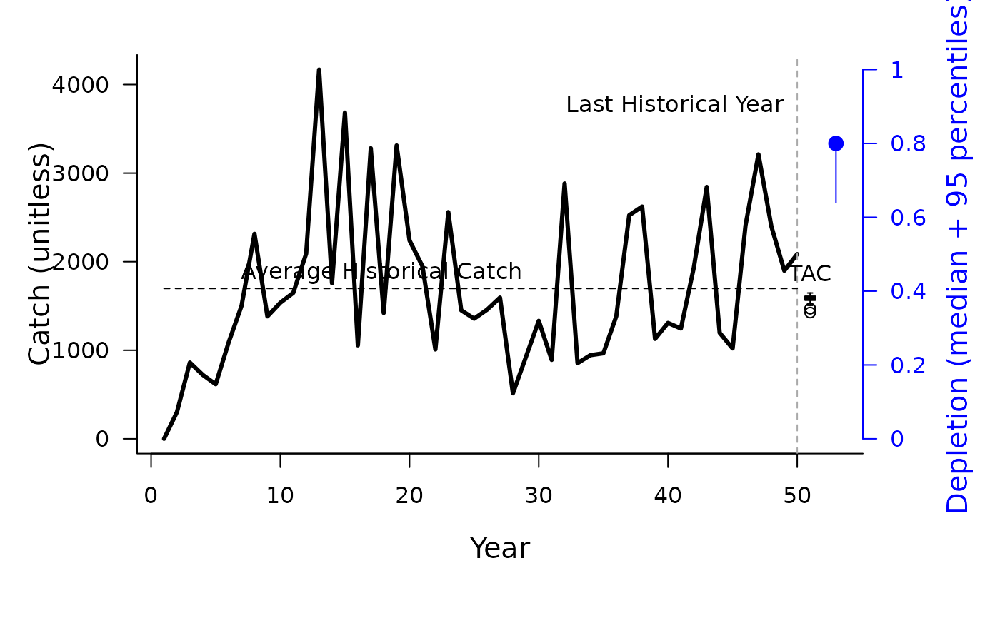
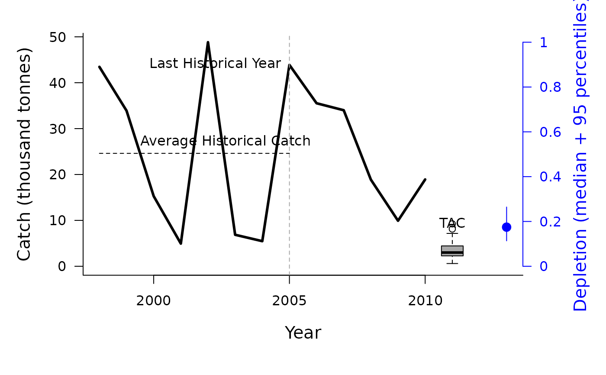
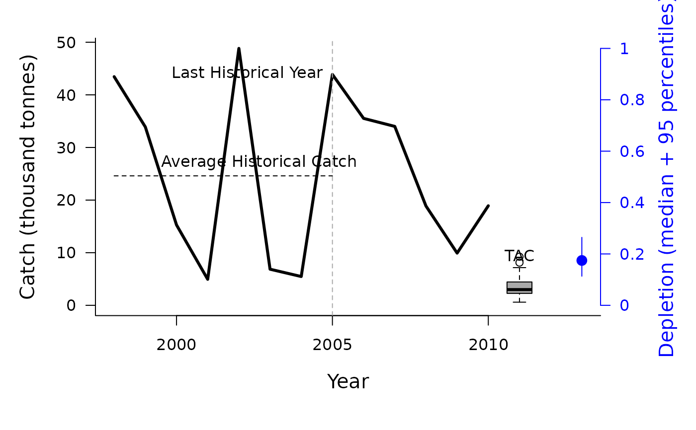

Depletion Corrected Average Catch
DCAC.RdThis group of MPs calculates a catch limit (dcac; intended as an MSY proxy) based on average historical catch while accounting for the windfall catch that got the stock down to its current depletion level (D).
Usage
DCACs(x, Data, reps = 100, plot = FALSE)
DCAC(x, Data, reps = 100, plot = FALSE)
DCAC_40(x, Data, reps = 100, plot = FALSE)
DCAC4010(x, Data, reps = 100, plot = FALSE)
DCAC_ML(x, Data, reps = 100, plot = FALSE)
DAAC(x, Data, reps = 100, plot = FALSE)
HDAAC(x, Data, reps = 100, plot = FALSE)Arguments
- x
A position in the data object
- Data
A data object
- reps
The number of stochastic samples of the MP recommendation(s)
- plot
Logical. Show the plot?
Value
An object of class Rec-class with the TAC slot populated with a numeric vector of length reps
Details
The method calculates the depletion-corrected average catch (dcac) as:
$$\textrm{dcac} = \frac{\sum_{y=1}^{n}{C_y}}{n+(1-D)/Y_{\textrm{pot}}}$$
where $$Y_{\textrm{pot}} = \frac{B_{\textrm{MSY}}}{B_0}\frac{F_{\textrm{MSY}}}{M}M$$ and \(C\) is the historical catches; i.e \(C\) does not change in the future projections in the MSE
The methods differ in the assumptions of current depletion (D). See the Functions section below for details.
Functions
DCACs: Depletion is not updated in the future projections. The TAC is static and not updated in the future years. This represents an application of the DCAC method where a catch limit is calculated based on current estimate of depletion and time-series of catch from the beginning of the fishery, and the TAC is fixed at this level for all future projections.DCAC: Depletion is estimated each management interval and used to update the catch limit recommendation based on the historical catch (which is not updated in the future projections).DCAC_40: Current stock biomass is assumed to be exactly at 40 per cent of unfished levels. The 40 percent depletion assumption may not really affect DCAC that much as it already makes TAC recommendations that are quite MSY-like.DCAC4010: The dynamic DCAC (depletion is updated) is paired with the 40-10 rule that throttles back the OFL to zero at 10 percent of unfished stock size (the OFL is not subject to downward adjustment above 40 percent unfished). DCAC can overfish below BMSY levels. The 40-10 harvest control rule largely resolves this problem providing an MP with surprisingly good performance even at low stock levels.DCAC_ML: This variant uses the mean length estimator to calculate current stock depletion. The mean length extension was programmed by Gary Nelson as part of his excellent R package 'fishmethods'.DAAC: Depletion Adjusted Average Catch: essentially DCAC (with updated Depletion) divided by BMSY/B0 (Bpeak) (Harford and Carruthers, 2017).HDAAC: Hybrid Depletion Adjusted Average Catch: essentially DCAC (with updated Depletion) divided by BMSY/B0 (Bpeak) when below BMSY, and DCAC above BMSY (Harford and Carruthers 2017).
Note
It's probably worth noting that DCAC TAC recommendations do not tend to zero as depletion tends to zero. It adjusts for depletion only in calculating historical average catch. It follows that at stock levels much below BMSY, DCAC tends to chronically overfish.
Required Data
See Data-class for information on the Data object
DCACs: AvC, BMSY_B0, Dt, FMSY_M, LHYear, Mort, Year, t
DCAC: AvC, BMSY_B0, Dt, FMSY_M, LHYear, Mort, Year, t
DCAC_40: AvC, BMSY_B0, FMSY_M, LHYear, Mort, Year, t
DCAC4010: AvC, BMSY_B0, Dt, FMSY_M, LHYear, Mort, Year, t
DCAC_ML: AvC, CAL, Cat, LHYear, Lbar, Lc, Mort, Year, t, vbK, vbLinf
DAAC: AvC, BMSY_B0, Dt, FMSY_M, LHYear, Mort, Year, t
HDAAC: AvC, BMSY_B0, Dt, FMSY_M, LHYear, Mort, Year, t
Rendered Equations
See Online Documentation for correctly rendered equations
References
MacCall, A.D., 2009. Depletion-corrected average catch: a simple formula for estimating sustainable yields in data-poor situations. ICES J. Mar. Sci. 66, 2267-2271.
Harford W. and Carruthers, T. 2017. Interim and long-term performance of static and adaptive management procedures. Fish. Res. 190, 84-94.
Examples
DCACs(1, MSEtool::Atlantic_mackerel, plot=TRUE)
#> TAC (median)
#> 5.573582
DCAC(1, MSEtool::Atlantic_mackerel, plot=TRUE)
 #> TAC (median)
#> 5.832422
DCAC_40(1, MSEtool::Atlantic_mackerel, plot=TRUE)
#> TAC (median)
#> 5.832422
DCAC_40(1, MSEtool::Atlantic_mackerel, plot=TRUE)
 #> TAC (median)
#> 6.752719
Data <- MSEtool::Atlantic_mackerel
Data@LHYear <- 2005
DCAC4010(1, Data, plot=TRUE)
#> TAC (median)
#> 6.752719
Data <- MSEtool::Atlantic_mackerel
Data@LHYear <- 2005
DCAC4010(1, Data, plot=TRUE)
 #> TAC (median)
#> 1.601936
DCAC_ML(1, MSEtool::SimulatedData, plot=TRUE)

#> TAC (median)
#> 1585.417
Data <- MSEtool::Atlantic_mackerel
Data@LHYear <- 2005
DAAC(1, Data, plot=TRUE)
#> TAC (median)
#> 1.601936
DCAC_ML(1, MSEtool::SimulatedData, plot=TRUE)

#> TAC (median)
#> 1585.417
Data <- MSEtool::Atlantic_mackerel
Data@LHYear <- 2005
DAAC(1, Data, plot=TRUE)
 #> TAC (median)
#> 3.050483
Data <- MSEtool::Atlantic_mackerel
Data@LHYear <- 2005
HDAAC(1, Data, plot=TRUE)

#> TAC (median)
#> 2.991074
#> TAC (median)
#> 3.050483
Data <- MSEtool::Atlantic_mackerel
Data@LHYear <- 2005
HDAAC(1, Data, plot=TRUE)

#> TAC (median)
#> 2.991074